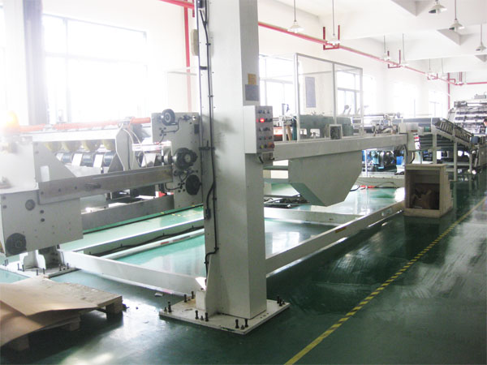
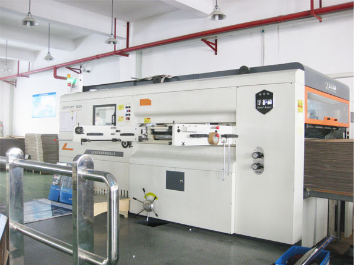
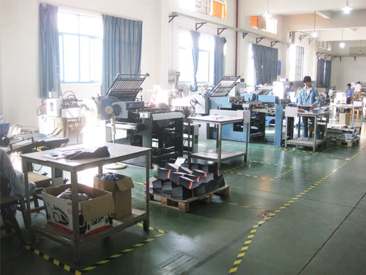
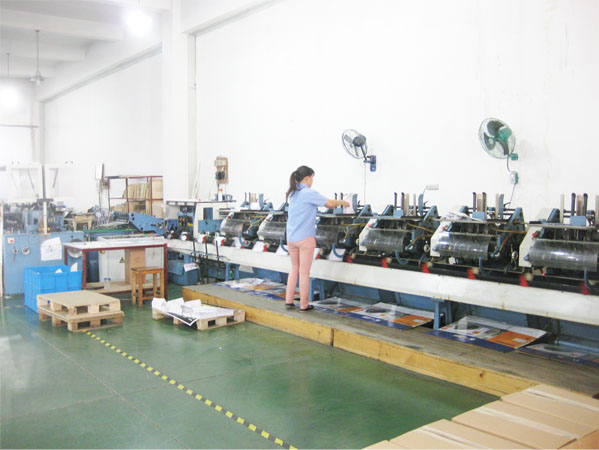

曼罗兰 ROLAND 900 HiPrint 胶印机
品牌与系列已识别 · 查看设备介绍
DAIKIN / ORIGINAL COLLECTION
从制版、胶印到印后加工，了解设备名称与生产工序。
品牌与系列已识别 · 查看设备介绍

品牌与系列已识别 · 查看设备介绍

设备类型识别 · 查看设备介绍

设备类型初步识别 · 查看设备介绍

品牌与系列已识别 · 查看设备介绍

设备类型识别 · 查看设备介绍

设备类型识别 · 查看设备介绍
没有找到匹配的设备，请更换关键词或分类。
图片来自大金原网站。设备名称结合照片标识、公司介绍与厂商资料整理；无法确认品牌或型号的项目已在详情中说明。
LET’S TALK ABOUT YOUR PROJECT